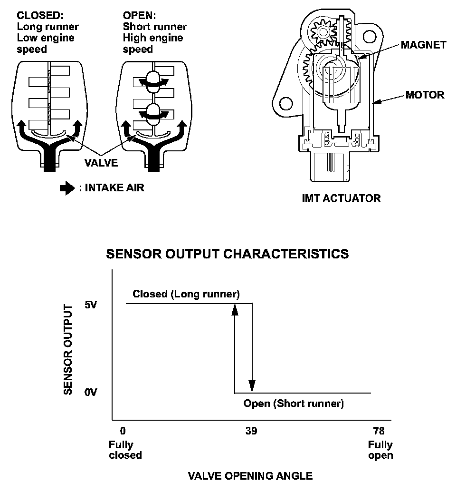
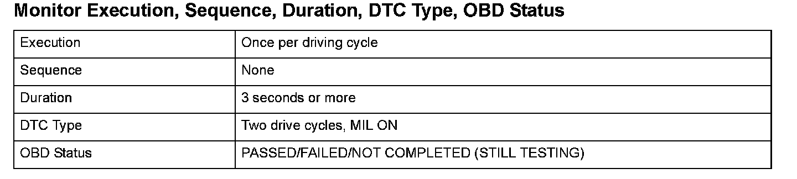
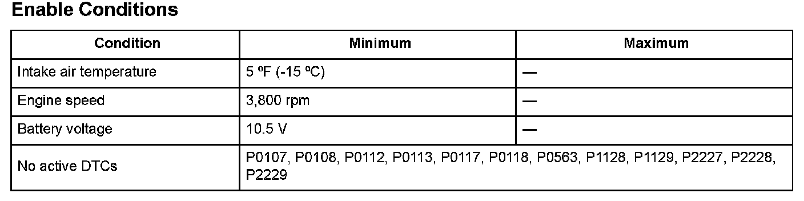

Advanced Diagnostics
DTC P1078: Intake Manifold Tuning (IMT) Valve Stuck in Low RPM Position
General Description
The intake manifold tuning (IMT) system controls engine output by selecting either long or short intake runner lengths. The system consists of the IMT valve, the IMT actuator, and the powertrain control module (PCM). The IMT actuator is attached to the intake manifold and it includes the motor and the Hall-effect-IC position sensing unit. The PCM actuates the motor, which operates the IMT valve. When the IMT valve is closed, the long runner is selected, increasing torque at low engine speed. When the IMT valve is open, the short runner is selected, increasing torque at high engine speed. A Hall-effect-IC position sensing unit is integrated with the motor to provide precise open/close feedback to the PCM. The IMT actuator sends a long runner return signal to the PCM when the IMT valve is closed, and it sends a short runner return signal when the IMT valve is open.
If the PCM receives no closed return signal when it sends a close command, or if it receives no open return signal when sending an open command to the IMT actuator, for a specified time, it detects a malfunction and stores a DTC.

Monitor Execution, Sequence, Duration, DTC Type, OBD Status

Enable Conditions
Malfunction Threshold
When the PCM sends an open (short runner) command, no short runner return signal is received for at least 3 seconds.
Driving Pattern
1. Start the engine. Let it idle until the radiator fan comes on.
2. Hold the engine speed to 3,800 rpm or more for at least 3 seconds.
Diagnosis Details
Conditions for illuminating the MIL
When a malfunction is detected during the first drive cycle, a Temporary DTC is stored in the PCM memory. If the malfunction recurs during the next (second) drive cycle, the MIL comes on and the DTC and the freeze frame data are stored.
Conditions for clearing the MIL
The MIL will be cleared if the malfunction does not recur during three consecutive trips in which the diagnostic runs.
The MIL, the DTC, the Temporary DTC, and the freeze frame data can be cleared by using the scan tool Clear command or by disconnecting the battery.